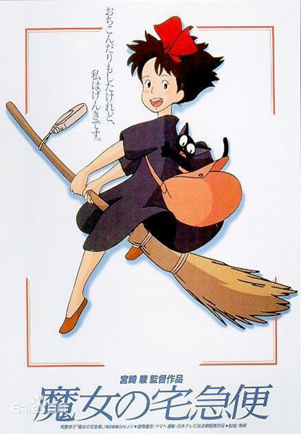

魔法少女一旦到了13岁就必须离开家进行为期一年的独立修行，
琪琪也不例外。她带着黑猫吉吉来到一个靠海的大城市中，可是谁都不搭理她。沮丧的琪琪偶然替别人送去一件遗失品，从而获得了面包店老板
娘的好感。在她的帮助下，琪琪利用自己的飞行魔法开始了快递业务。
渐渐地，琪琪习惯了新的环境，工作也进行得很顺利，她结识不少新朋友。一个热衷于
制造飞机的男孩“蜻蜓”邀请琪琪参加飞行俱乐部的聚会。在聚会当天，琪琪为了帮助一位老夫人送东西而没有去成，并在雨中得了感冒。琪琪
突然发现自己的魔法能力正在削弱。好友乌尔斯拉邀请情绪低落的琪琪去自己家玩，在她的安慰下琪琪又恢复了自信。电视里播出“蜻蜓”开飞
机试飞遇险的新闻，琪琪骑上拖把奋力飞往出事地点，成功救下“蜻蜓”。
